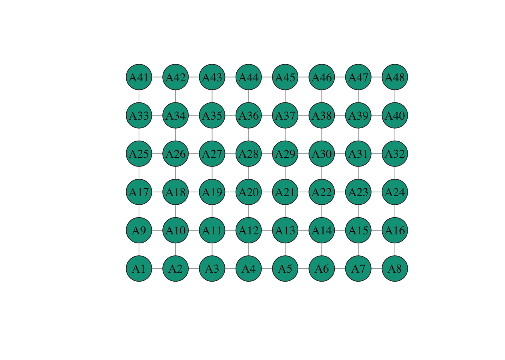
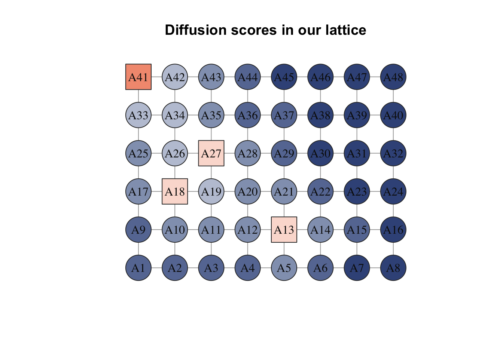

BiocManager::install("diffuStats")diffuStats: compute diffusion scores over networks
diffuStats: compute diffusion scores over networks
Introduction
The general purpose diffuStats R package offers a collection of seven network propagation scores and five graph kernels. Those find application in ubiquitous computational biology applications, being one representative example the propagation of genetic information (e.g. disease-associated genes) in a gene-gene or a protein-protein interaction network. A distinctive feature of diffuStats is the implementation of statistically normalised scores, which address the recurrent question of how would the propagation of a randomised input look. It offers parametric, exact z-scores as well as permutation-based empirical probabilities.
The diffuStats software was published in:
Picart-Armada, S., Thompson, W. K., Buil, A., & Perera-Lluna, A. (2018). diffuStats: an R package to compute diffusion-based scores on biological networks. Bioinformatics, 34(3), 533-534.
General guidelines on how to choose the scores, along with mathematical properties of the normalised and unnormalised scores, were published in:
Picart-Armada, S., Thompson, W. K., Buil, A., & Perera-Lluna, A. (2020). The effect of statistical normalisation on network propagation scores. Bioinformatics, btaa896.
From versions 1.10.2/1.11.2 onwards, diffuStats provides functions to export the exact statistical moments (means and variances), see ?moments. Now the users can characterise the systematic biases in the diffusion scores in their domain of application.
Installation
diffuStats is part of Bioconductor, and can be installed using
For the development version, you can also install the package through R CMD INSTALL or through devtools::install_github("b2slab/diffuStats"), which points to its GitHub repository.
Getting started
diffuStats is an R package providing several scores for diffusion in networks. While its original purpose lies on biological networks, its usage is not limited to that scope. In general terms, diffuStats builds several propagation algorithms on the package [@igraph] classes and methods. A more detailed analysis and documentation of the implemented methods can be found in the protein function prediction vignette.
To get started, we will load a toy graph included in the package.
library(diffuStats)
data("graph_toy")Let’s take a look in the graph:
graph_toyIGRAPH 9a7b9df UN-- 48 82 -- Lattice graph
+ attr: name (g/c), dimvector (g/n), nei (g/n), mutual (g/l), circular
| (g/l), layout (g/n), asp (g/n), input_vec (g/n), input_mat (g/n),
| output_vec (g/n), output_mat (g/n), input_list (g/x), name (v/c),
| class (v/c), color (v/c), shape (v/c), frame.color (v/c), label.color
| (v/c), size (v/n)
+ edges from 9a7b9df (vertex names):
[1] A1 --A2 A1 --A9 A2 --A3 A2 --A10 A3 --A4 A3 --A11 A4 --A5 A4 --A12
[9] A5 --A6 A5 --A13 A6 --A7 A6 --A14 A7 --A8 A7 --A15 A8 --A16 A9 --A10
[17] A9 --A17 A10--A11 A10--A18 A11--A12 A11--A19 A12--A13 A12--A20 A13--A14
[25] A13--A21 A14--A15 A14--A22 A15--A16 A15--A23 A16--A24 A17--A18 A17--A25
+ ... omitted several edgesplot(graph_toy)
In the next section, we will be running diffusion algorithms on this tiny lattice graph.
Specifying the input
The package diffuStats is flexible and allows several inputs at once for a given network. The input format is, in its most general form, a list of matrices, where each matrix contains measured nodes in rows and specific scores in columns. Differents sets of scores may have different backgrounds, meaning that we can specifically tag sets of nodes as unlabelled. If we dispose of a unique list of nodes for label propagation, we should provide a list with a unique column vector that contains 1’s in the labels in the list and 0’s otherwise.
In this example data, the graph contains one input already.
input_vec <- graph_toy$input_vec
head(input_vec, 15) A1 A2 A3 A4 A5 A6 A7 A8 A9 A10 A11 A12 A13 A14 A15
0 0 0 0 0 0 0 0 0 0 0 0 1 0 0 Let’s check how many nodes have values
length(input_vec)[1] 48We see that all the nodes have a measure in each of the four score sets. In practice, these score sets could be disease genes, pathways, et cetera.
The diffusion algorithm
Each one of these columns in the input can be smoothed using the network and new value will be derived - unlabelled nodes are also scored. This is the main purpose of diffusion: to derive new scores that intend to keep the same trends as the scores in the input, but taking into account the network structure. Equivalently, this can be regarded as a label propagation where positive and negative examples propagate their labels to their neighbouring nodes.
Let’s start with the simplest case of diffusion: only a vector of values is to be smoothed. Note that these values must be named and must be a subset or all of the graph nodes.
output_vec <- diffuStats::diffuse(
graph = graph_toy,
method = "raw",
scores = input_vec)
head(output_vec, 15) A1 A2 A3 A4 A5 A6 A7
0.03718927 0.04628679 0.04718643 0.06099494 0.09567369 0.04866964 0.02124098
A8 A9 A10 A11 A12 A13 A14
0.01081382 0.06528103 0.10077145 0.08146401 0.10111963 0.27303017 0.07776389
A15
0.02548044 Diffusion scores visualisation
The best way to visualise the scores is overlaying them in the original lattice. diffuStats also comes with basic mapping functions for graphical purposes. Let’s see an example:
igraph::plot.igraph(
graph_toy,
vertex.color = diffuStats::scores2colours(output_vec),
vertex.shape = diffuStats::scores2shapes(input_vec),
main = "Diffusion scores in our lattice"
)
Here, we have mapped the scores to colours using scores2colours and we have highlighted the nodes that were in the original input using scores2shapes on the original scores. Square nodes were labelled as relevant in the input, and the diffusion algorithm smoothed these labels over the network - as in the guilt-by-association principle.
Several inputs, several smoothing scores
The input to diffuse can be more than a vector with scores. It can be provided with a set of score vectors, stored in a matrix by columns, where rownames should contain the nodes that are being scored. As different score sets might have different labelled/unlabelled nodes, diffuse also accepts a list of score matrices that may have a different amount of rows.
In this section, we will diffuse using a matrix of scores that contains four sets of scores, with four different names. These example names refer to what the input contains:
- Single: a single node is labelled as positive
- Row: a row of nodes in the lattice graph are positives
- Small_sample: a randomly generated small sample of the lattice nodes are positives
- Large_sample: a randomly generated sample with half of the lattice nodes are positives
input_mat <- graph_toy$input_mat
head(input_mat) Single Row Small_sample Large_sample
A1 1 1 0 1
A2 0 1 0 0
A3 0 1 0 1
A4 0 1 0 1
A5 0 1 0 0
A6 0 1 0 0On the other hand, there are a variety of methods to compute the diffusion scores. At the moment, the following: raw, ml and gm for classical propagation; z and mc for scores normalised through a statistical model, and similarly ber_s and ber_p, as described in [@mosca]. The scoring methods mc and ber_p require permutations -thus being computationally intense- whereas the rest are deterministic.
For instance, let’s smooth through mc the input matrix:
output_mc <- diffuStats::diffuse(
graph = graph_toy,
method = "mc",
scores = input_mat)
head(output_mc) Single Row Small_sample Large_sample
A1 0.9999000 0.9877012 0.5414459 0.8330167
A2 0.9793021 0.9975002 0.5338466 0.5467453
A3 0.8784122 0.9988001 0.4919508 0.8967103
A4 0.7387261 0.9997000 0.6132387 0.7349265
A5 0.5267473 0.9996000 0.7109289 0.3150685
A6 0.3758624 0.9992001 0.5006499 0.2210779We can plot the result of the fourth column Large_sample:
score_col <- 4
igraph::plot.igraph(
graph_toy,
vertex.color = diffuStats::scores2colours(output_mc[, score_col]),
vertex.shape = diffuStats::scores2shapes(input_mat[, score_col]),
main = "Diffusion scores in our lattice"
)
Each method has its particularities and, in the end, it is all about the question being asked to the data and the particularities of the dataset.
Benchmarking
Package diffuStats offers the option to assess the performance of the diffusion scores given user-defined target scores or labels.
The validation must be supplied with the same format as the input scores, but the labels of the nodes might be different. For example, we can diffuse labels on all the nodes of a graph but evaluate using only a specific subset of nodes and target labels. A small example: we want to evaluate how good the diffusion scores raw and ml are at recovering the original labels of the first 15 nodes when diffusing in the example network.
df_perf <- perf(
graph = graph_toy,
scores = graph_toy$input_mat,
validation = graph_toy$input_mat[1:15, ],
grid_param = expand.grid(method = c("raw", "ml")))
df_perf auc Column method
1 1.00 Single raw
2 1.00 Row raw
3 1.00 Small_sample raw
4 0.96 Large_sample raw
5 1.00 Single ml
6 1.00 Row ml
7 1.00 Small_sample ml
8 0.96 Large_sample mlThis indicates that both methods have a very high area under the curve in this example: the ordering of the diffusion scores is very aligned to the class label.
The last example is useful for showing a case in which diffusion scores perform poorly. As the Small_sample and Large_sample positive labels have been randomly assigned ignoring the network, diffusion is not expected to accurately predict one part of the network using as input another disjoint subset of labelled nodes. Thus, if we try to propagate the labels from nodes \(1\) to \(20\) and evaluate the performance using nodes from \(21\) to \(48\), we get a poor result:
df_perf <- perf(
graph = graph_toy,
scores = graph_toy$input_mat[1:20, 3:4],
validation = graph_toy$input_mat[21:48, 3:4],
grid_param = expand.grid(method = c("raw", "ml")))
df_perf auc Column method
1 0.6923077 Small_sample raw
2 0.3437500 Large_sample raw
3 0.4615385 Small_sample ml
4 0.5833333 Large_sample mlR session info
sessionInfo()R version 4.4.2 (2024-10-31)
Platform: aarch64-apple-darwin20
Running under: macOS Sequoia 15.3
Matrix products: default
BLAS: /Library/Frameworks/R.framework/Versions/4.4-arm64/Resources/lib/libRblas.0.dylib
LAPACK: /Library/Frameworks/R.framework/Versions/4.4-arm64/Resources/lib/libRlapack.dylib; LAPACK version 3.12.0
locale:
[1] en_US.UTF-8/en_US.UTF-8/en_US.UTF-8/C/en_US.UTF-8/en_US.UTF-8
time zone: Europe/Madrid
tzcode source: internal
attached base packages:
[1] stats graphics grDevices utils datasets methods base
other attached packages:
[1] diffuStats_1.26.0
loaded via a namespace (and not attached):
[1] Matrix_1.7-2 gtable_0.3.6 expm_1.0-0
[4] BiocStyle_2.34.0 jsonlite_1.8.9 dplyr_1.1.4
[7] compiler_4.4.2 BiocManager_1.30.25 tidyselect_1.2.1
[10] Rcpp_1.0.14 assertthat_0.2.1 scales_1.3.0
[13] yaml_2.3.10 fastmap_1.2.0 lattice_0.22-6
[16] ggplot2_3.5.1 R6_2.5.1 plyr_1.8.9
[19] generics_0.1.3 igraph_2.1.4 knitr_1.49
[22] htmlwidgets_1.6.4 MASS_7.3-64 backports_1.5.0
[25] checkmate_2.3.2 tibble_3.2.1 munsell_0.5.1
[28] pillar_1.10.1 rlang_1.1.5 xfun_0.50
[31] RcppParallel_5.1.10 cli_3.6.3 magrittr_2.0.3
[34] digest_0.6.37 grid_4.4.2 rstudioapi_0.17.1
[37] lifecycle_1.0.4 RcppArmadillo_14.2.2-1 vctrs_0.6.5
[40] evaluate_1.0.3 glue_1.8.0 data.table_1.16.4
[43] codetools_0.2-20 colorspace_2.1-1 rmarkdown_2.29
[46] tools_4.4.2 pkgconfig_2.0.3 precrec_0.14.4
[49] htmltools_0.5.8.1 References
News
File NEWS.md keeps track of the additions and bug fixes of each package version.